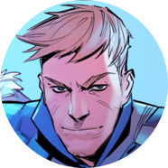
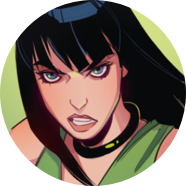
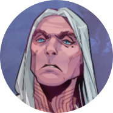
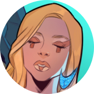

Андрей Радов
Тусовщик, заложивший крест деда ради покупки автомобиля. Чтобы вернуть семейную реликвию-артефакт, путешествовал во времени и поучаствовал в многочисленных войнах. Стал Иноком — защитником русской земли, однако в кроссовере утратил свои силы и былой статус. Ныне защищает все Многомирье.

Ксюша Радова
Мироходец, дриада, жена Андрея Радова. Была убита им самим, превратившимся в демона, после чего воскрешена как дриада. В ней сохранились силы ведьм Котлована, которые Ксюша умело применяет в сражениях и повседневной жизни.

Серый Волк
Мироходец, оборотень, коллекционер артефактов. Был убит Кощеем, когда пришёл к нему за Василисой без оружия, но та, тронутая этим поступком, воскресила его. Позже озлобился, обзавёлся шубой оборотня и начал звать себя Волком. Пытается спасти Василису из плена Кощея.

Кощей
«Любящий муж, радушный хозяин, спаситель миров, и твоя смерть, если захочешь». Самый могучий воин Многомирья, оберегающий нашу Землю от покушений богов. Альтернативная версия Ивана с уничтоженной Земли. Любит Василису.

Василиса Премудрая
Главная причина, по которой Иван-царевич иной раз кажется скорее Иваном-дураком. Была создана Мокошью с целью влюбить в себя Ивана и убить его, но влюбилась в него сама и не смогла убить. Могущественная волшебница, объединившая Андрея, Ксюшу и Волка в отряд Мироходцев.

Диана де Маридор
Жрица смерти, служащая Танатосу. Сильная колдунья, была превращена Марсом в Медузу, взглядом обращавшую людей в камень. Была спасена Ксюшей.

Луна
Дочь Короля-Волка, шкуру которого стянул Иван. Была подброшена им к Королю-Волку в младенчестве, с целью смягчить его и сыграть на этой слабости. Когда её мир поработил колдун Марабель, Луна отправилась на поиски силы своего отца.

Яра
Сила, способная убивать богов. Заточена в рапире, принадлежавшей вначале Кощею, затем Андрею Радову. Не знает пощады, жестока и кровожадна.

Магистр
Могущественный чернокнижник, изначально из линейки «Инок». Тайно сотрудничает с Семиазой. Принял активное участие в возвращении Кутха. Охотится за волшебными камнями.